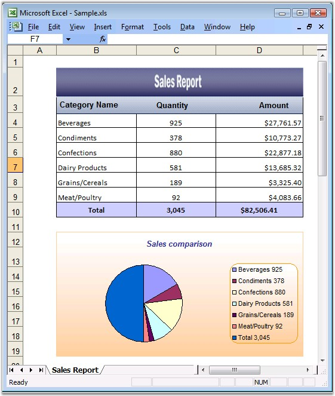

Essential XlsIO has APIs for creating an embedded chart. The IChartShape interface represents the embedded chart's in-memory, and this object can be used to format and modify the chart settings for chart area, plot area, and chart title area, with gradient, texture, patterns and pictures.
IChartFrameFormat can be used to change the format of the chart. IChartSeries is used to format the series. XlsIO provides options to enable/disable Legends and Data Tables by using the HasLegend and HasDataTable properties. You can also resize and position the embedded chart in a worksheet.
A chart in XlsIO can be created either through the Data Range of the chart, or by adding series one by one.
Following code example illustrates how to create a chart through the Data Range.
|
[C#]
// Clustered Column Chart. IChartShape chart = sheet.Charts.Add();
// Set Chart Type. chart.ChartType = ExcelChartType.Column_Clustered
// Set Data Range. chart.DataRange = sheet.Range["A1:E5"];
// Specify Series chart.IsSeriesInRows = false;
// Chart Title chart.ChartTitle = "Sales comparison";
// X-axis title chart.PrimaryCategoryAxis.Title = "Fruit Types";
// Y-axis title chart.PrimaryValueAxis.Title = "Months";
// Show Data Table. chart.HasDataTable = true;
// Format Chart Area. IChartFrameFormat chartArea = chart.ChartArea;
// Border
// Style chartArea.Border.LinePattern = ExcelChartLinePattern.Solid;
// Color chartArea.Border.LineColor = Color.Blue;
// Weight chartArea.Border.LineWeight = ExcelChartLineWeight.Hairline;
// Area
// Fill Effects chartArea.Fill.FillType = ExcelFillType.Gradient;
// Two Color chartArea.Fill.GradientColorType = ExcelGradientColor.TwoColor;
// Set two colors. chartArea.Fill.BackColor = Color.FromArgb(205,217,234); chartArea.Fill.ForeColor = Color.White;
// Plot Area IChartFrameFormat chartPlotArea = chart.PlotArea;
// Border
// Style chartPlotArea.Border.LinePattern = ExcelChartLinePattern.Solid;
// Color chartPlotArea.Border.LineColor = Color.Blue;
// Weight chartPlotArea.Border.LineWeight = ExcelChartLineWeight.Hairline;
// Fill Effects chartPlotArea.Fill.FillType = ExcelFillType.Gradient;
// Two Color chartPlotArea.Fill.GradientColorType = ExcelGradientColor.TwoColor;
// Set two colors. chartPlotArea.Fill.BackColor = Color.FromArgb(205,217,234); chartPlotArea.Fill.ForeColor = Color.White;
// Format Data Series. IChartSerie chartAppleSerie = chart.Series["Apples"];
// Color of first serie. chartAppleSerie.SerieFormat.AreaProperties.ForegroundColor = Color.Red; chartAppleSerie = chart.Series["Oranges"];
// Color of second serie. chartAppleSerie.SerieFormat.AreaProperties.ForegroundColor = Color.Orange; chartAppleSerie = chart.Series["Grapes"];
// Color of third serie. chartAppleSerie.SerieFormat.AreaProperties.ForegroundColor = Color.Purple; chartAppleSerie = chart.Series["Banana"];
// Color of fourth serie. chartAppleSerie.SerieFormat.AreaProperties.ForegroundColor = Color.Yellow;
// Embedded chart position. chart.TopRow = 10; chart.BottomRow = 40; chart.LeftColumn = 5; chart.RightColumn = 15; |
|
[VB.NET]
' Clustered Column Chart. Dim chart As IChartShape = sheet.Charts.Add()
' Set Chart Type. chart.ChartType = ExcelChartType.Column_Clustered
' Set Data Range. chart.DataRange = sheet.Range("A1:E5")
' Specify Series. chart.IsSeriesInRows = False
' Chart Title chart.ChartTitle = "Sales comparison"
' X-axis title chart.PrimaryCategoryAxis.Title = "Fruit Types"
' Y-axis title chart.PrimaryValueAxis.Title = "Months"
' Show Data Table. chart.HasDataTable = True
' Format Chart Area. Dim chartArea As IChartFrameFormat = chart.ChartArea
' Border
' Style chartArea.Border.LinePattern = ExcelChartLinePattern.Solid
' Color chartArea.Border.LineColor = Color.Blue
' Weight chartArea.Border.LineWeight = ExcelChartLineWeight.Hairline
' Area
' Fill Effects chartArea.Fill.FillType = ExcelFillType.Gradient
' Two Color chartArea.Fill.GradientColorType = ExcelGradientColor.TwoColor
' Set two colors. chartArea.Fill.BackColor = Color.FromArgb(205,217,234) chartArea.Fill.ForeColor = Color.White
' Plot Area Dim chartPlotArea As IChartFrameFormat = chart.PlotArea
' Border
' Style chartPlotArea.Border.LinePattern = ExcelChartLinePattern.Solid
' Color chartPlotArea.Border.LineColor = Color.Blue
' Weight chartPlotArea.Border.LineWeight = ExcelChartLineWeight.Hairline
' Fill Effects chartPlotArea.Fill.FillType = ExcelFillType.Gradient
' Two Color chartPlotArea.Fill.GradientColorType = ExcelGradientColor.TwoColor
' Set two colors. chartPlotArea.Fill.BackColor = Color.FromArgb(205,217,234) chartPlotArea.Fill.ForeColor = Color.White
' Format Data Series. Dim chartAppleSerie As IChartSerie = chart.Series("Apples")
' Color of first serie. chartAppleSerie.SerieFormat.AreaProperties.ForegroundColor = Color.Red chartAppleSerie = chart.Series("Oranges")
' Color of second serie. chartAppleSerie.SerieFormat.AreaProperties.ForegroundColor = Color.Orange chartAppleSerie = chart.Series("Grapes")
' Color of third serie. chartAppleSerie.SerieFormat.AreaProperties.ForegroundColor = Color.Purple chartAppleSerie = chart.Series("Banana")
' Color of fourth serie. chartAppleSerie.SerieFormat.AreaProperties.ForegroundColor = Color.Yellow
' Embedded chart position. chart.TopRow = 10 chart.BottomRow = 40 chart.LeftColumn = 5 chart.RightColumn = 15 |
Following code example illustrates how to create charts by adding Series.
|
[C#]
// Inserting sample data for the chart. sheet.Range["A1"].Text = "Month"; sheet.Range["B1"].Text = "Product A"; sheet.Range["C1"].Text = "Product B";
// Months sheet.Range["A2"].Text = "Jan"; sheet.Range["A3"].Text = "Feb"; sheet.Range["A4"].Text = "Mar"; sheet.Range["A5"].Text = "Apr"; sheet.Range["A6"].Text = "May";
// Random Data. Random r = new Random(); for(int i=2;i<=6;i++) { for(int j=2;j<=3;j++) { sheet.Range[i,j].Number = r.Next(0,500); } }
// Embedded Chart. IChartShape chart = sheet.Charts.Add();
// Setting chart type. chart.ChartType = ExcelChartType.Line;
// Setting the Chart Title. chart.ChartTitle = "Product Sales comparison";
// Product A. IChartSerie productA = chart.Series.Add("ProductA"); productA.Values = sheet.Range["B2:B6"]; productA.CategoryLabels = sheet.Range["A2:A6"];
// Product B. IChartSerie productB = chart.Series.Add("ProductB"); productB.Values = sheet.Range["C2:C6"]; productB.CategoryLabels = sheet.Range["A2:A6"]; |
|
[VB.NET]
' Inserting sample data for the chart. sheet.Range("A1").Text = "Month" sheet.Range("B1").Text = "Product A" sheet.Range("C1").Text = "Product B"
' Months sheet.Range("A2").Text = "Jan" sheet.Range("A3").Text = "Feb" sheet.Range("A4").Text = "Mar" sheet.Range("A5").Text = "Apr" sheet.Range("A6").Text = "May"
' Random Data. Dim r As Random = New Random For i As Integer = 2 To 6 For j As Integer = 2 To 3 sheet.Range(i, j).Number = r.Next(0, 500) Next j Next i
' Embedded Chart. Dim chart As IChartShape = sheet.Charts.Add()
' Setting chart type. chart.ChartType = ExcelChartType.Line
' Setting Chart Title. chart.ChartTitle = "Product Sales comparison"
' Product A. Dim productA As IChartSerie = chart.Series.Add("ProductA") productA.Values = sheet.Range("B2:B6") productA.CategoryLabels = sheet.Range("A2:A6")
' Product B. Dim productB As IChartSerie = chart.Series.Add("ProductB") productB.Values = sheet.Range("C2:C6") productB.CategoryLabels = sheet.Range("A2:A6") |

Figure 76: XlsIO with Embedded Chart